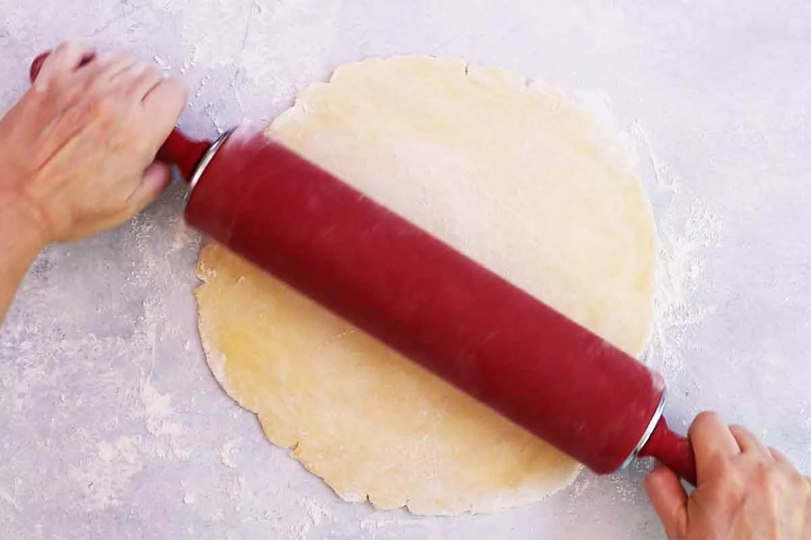
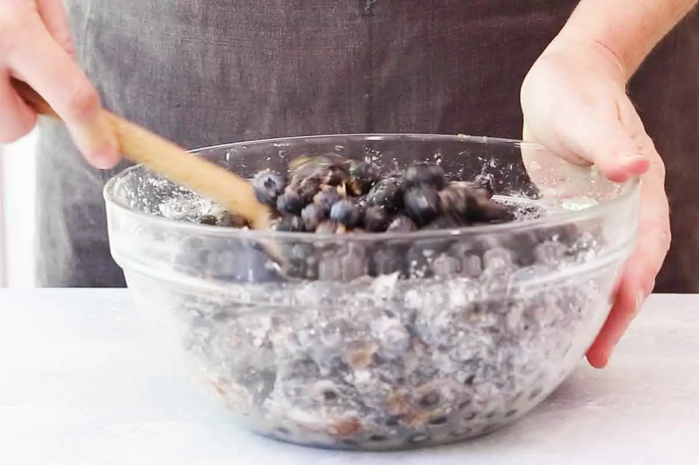
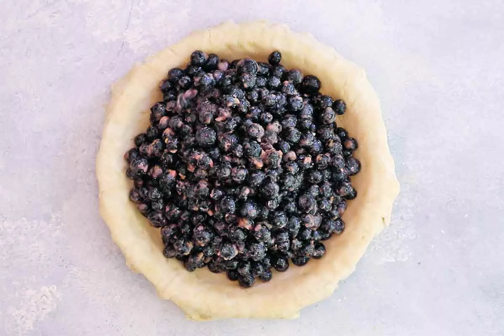
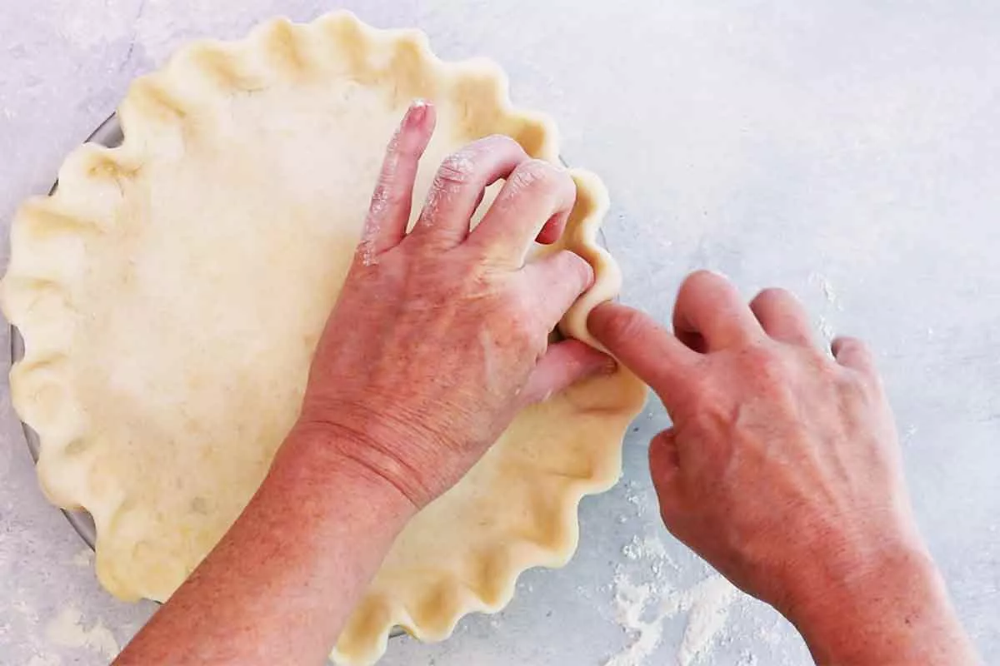
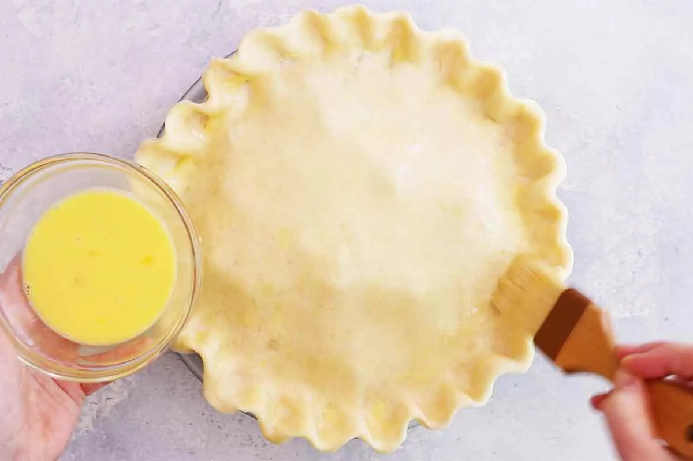
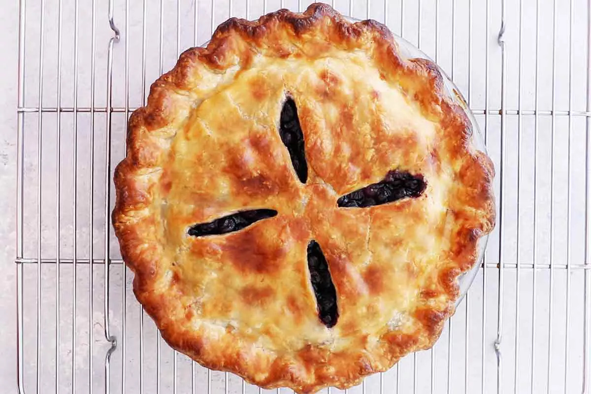

Orman meyveleri arasında yer alan yaban mersini, pasta ve tatlıların içinde sıklıkla kullanılmaktadır. Hazırsanız, yaban mersinli turta tarifi için kolları sıvayalım.
Malzemeler
- 6 su bardağı taze veya donmuş yaban mersini
- 1 çay kaşığı rendelenmiş limon kabuğu
- 1 yemek kaşığı limon suyu
- 1/4 su bardağı (yaklaşık 30 gr) mısır nişastası
- 1/2 su bardağı şeker (100 gr)
- 1/2 çay kaşığı tarçın
- 1 yumurta
- 1 yemek kaşığı süt
Adımlar
-
Alt tabanı hazırlayın
Tart hamurunu buzdolabından çıkarın ve 5 ila 10 dakika bekletin. Hafifçe unlanmış temiz, düz bir yüzeye koyun. Yaklaşık 13 inç genişliğinde bir daireye yuvarlayın. Açılan hamuru 9 inçlik bir turta tepsisine yerleştirin. Kenarlarını kesin ve soğuması için buzdolabına koyun.
 -
Yaban mersini dolgusunu yapın
Hamurun ikinci kısmını, siz doldurmayı yaparken ısınması için buzdolabından çıkarın.Yaban mersini, şeker, mısır nişastası, tarçın, limon kabuğu rendesi ve limon suyunu büyük bir kaba koyun. Tüm yaban mersini biraz şeker ve un ile kaplanacak şekilde hafifçe karıştırın.
 -
Alt tarafı doldurun
Alt tabanı buzdolabından çıkarın ve şeker kaplı meyveleri yerleştirin.
 -
İkinci tart hamurunu açın
Hamuru birinci hamurla aynı boyut ve kalınlıkta yuvarlamak için bir oklava kullanın. Yabanmersini dolgusunun üstüne yerleştirin.Üstteki hamuru, alttaki hamurun kenarının altına ve üstüne sıkıştırın ve kenarlarını parmaklarınızla kıvırın.
 -
Fırını önceden ısıtın
Fırın tepsisini fırının ortasına yerleştirin ve 425 ° F'ye ısıtın.
-
Tartın üzerine fırçayla yumurta sürün
Yumurta ve sütü birlikte çırpın. Tartın üzerine fırçayla sürün.
 -
Turtayı pişirin
425 derecede 20 dakika pişirin. Isıyı 350 ° F'ye düşürün ve 30 ila 40 dakika daha veya meyve suları köpürene ve kalınlaşana kadar pişirin.
-
Turtayı soğutun, sonra servis yapın
Servis yapmadan önce tamamen soğumaya bırakın.
